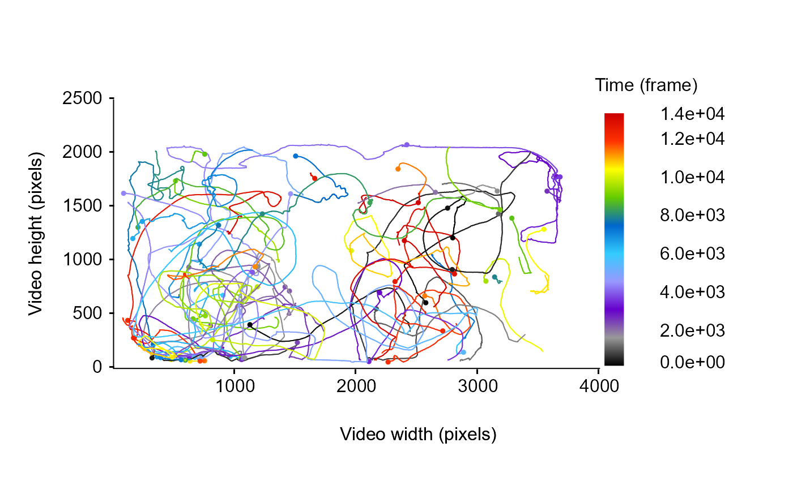
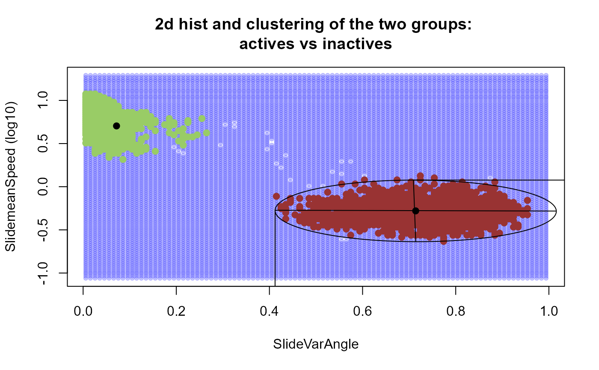
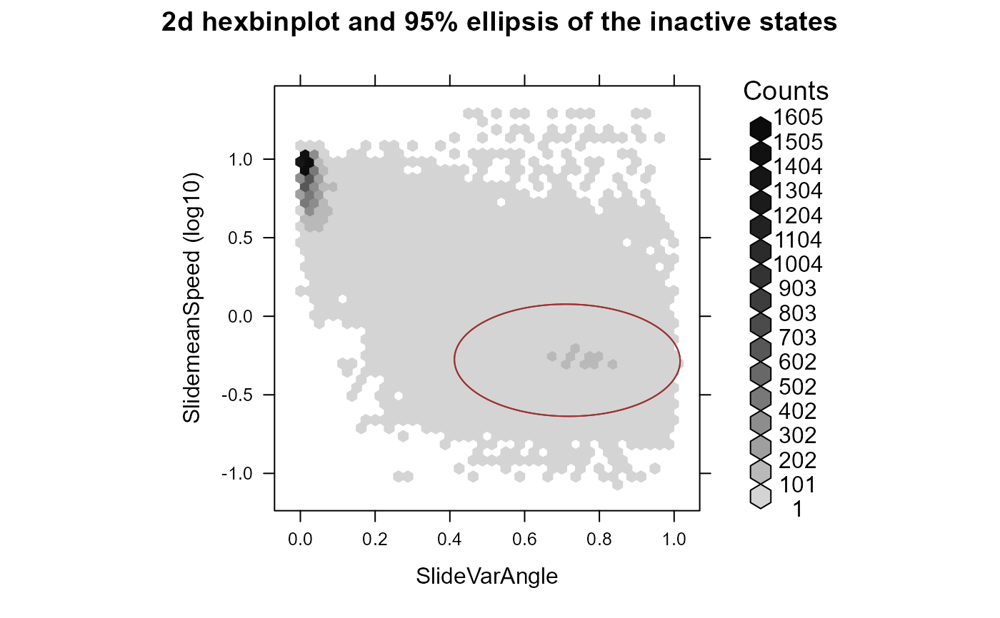
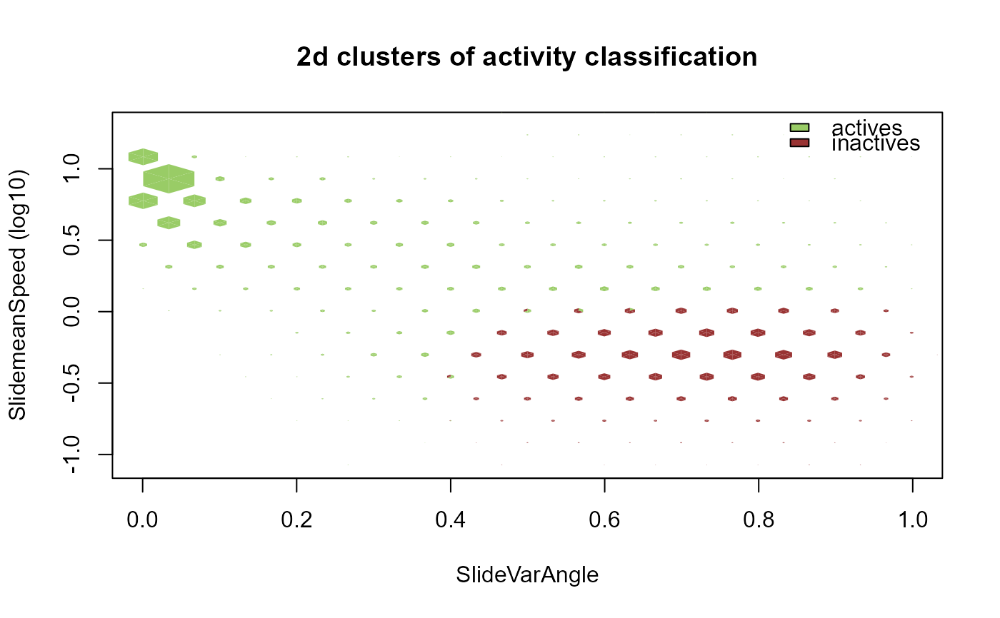
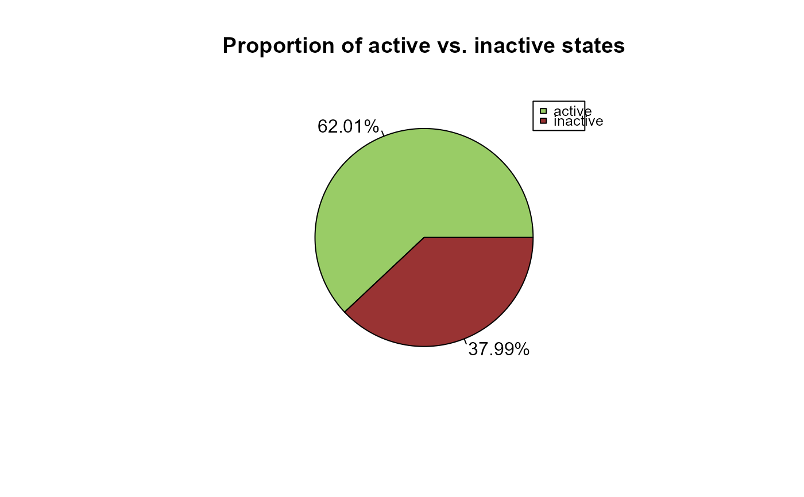
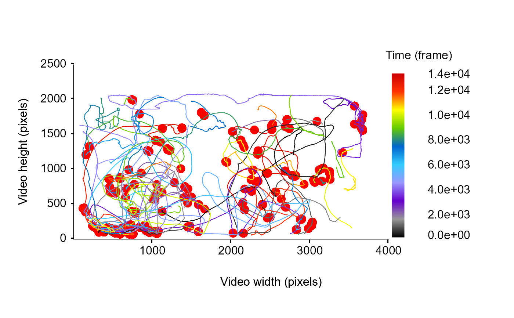

Determine active or inactive states according to density based clustering method.
Source:R/activity2.R
activity2.RdGiven a list of data frames containing tracking information and two variable of interest the function use density based clustering as introduced in Ester et al. (1996). Also, the function use the DBSCAN method from Hennig (2020) to discriminate active and inactive states in a 2d space.
Usage
activity2(
trackDat,
var1 = NULL,
var2 = NULL,
var1T = NULL,
var2T = NULL,
nbins = NULL,
eps = NULL,
minPts = NULL,
scale = TRUE,
na.rm = TRUE,
graph = TRUE
)Arguments
- trackDat
A list of data frame containing tracking information for each tracklet.
- var1
A character string indicating the name of the variable to use as the first dimension.
- var2
A character string indicating the name of the variable to use as the second dimension.
- var1T
A function used to transform var1 (e.g., log, sqrt - optional).
- var2T
A function used to transform var2 (e.g., log, sqrt - optional).
- nbins
A numeric value indicating the number of bins in both vertical and horizontal directions (default = 100).
- eps
A numeric value specifying the reachability distance (Ester et al., 1996), which correspond to the maximum distance around cluster's members (see
dbscan).- minPts
A numeric value specifying the reachability minimum no. of points (Ester et al., 1996), which correspond to the minimum number of point per cluster (see
dbscan).- scale
A logical value (i.e., TRUE or FALSE) indicating whether the data should be centered (i.e., values minus the mean) and scaled (divided by the standard deviation) (default = TRUE).
- na.rm
A logical value (i.e., TRUE or FALSE) indicating whether NA values should be stripped before the computation proceeds (default = TRUE).
- graph
A logical value (i.e., TRUE or FALSE) indicating whether the various diagnostics plots should be displayed or not (default = TRUE).
Value
This function returns the results of the classification (actives vs. inactives) appended to the original list of data frame containing tracking information for each tracklet.
References
Christian Hennig (2020). fpc: Flexible Procedures for Clustering. R package version 2.2-9. https://CRAN.R-project.org/package=fpc
Martin Ester, Hans-Peter Kriegel, Joerg Sander, Xiaowei Xu (1996). A Density-Based Algorithm for Discovering Clusters in Large Spatial Databases with Noise. Institute for Computer Science, University of Munich. Proceedings of 2nd International Conference on Knowledge Discovery and Data Mining (KDD-96).
Examples
## Not run:
# Download the first dataset from the sample data repository
Path2Data <- MoveR::DLsampleData(dataSet = 1, tracker = "TRex")
Path2Data
#> [1] "C:\\Users\\quent\\AppData\\Local\\Temp\\RtmpIBGA5h\\MoveR_SampleData-main\\sample_1\\TRexOutput"
#> [2] "C:\\Users\\quent\\AppData\\Local\\Temp\\RtmpIBGA5h\\MoveR_SampleData-main\\sample_1\\ReferenceData\\DistMatrixFromArenaEdge_2602_ISA3080_Low_5.mov_1800.txt"
#> [3] "C:\\Users\\quent\\AppData\\Local\\Temp\\RtmpIBGA5h\\MoveR_SampleData-main\\sample_1\\ReferenceData\\RefDat_2602_ISA3080_Low_5.csv"
# Import the list containing the 9 vectors classically used for further computation
Data <- MoveR::readTrex(Path2Data[[1]])
# convert it to a list of tracklets
trackDat <- MoveR::convert2Tracklets(Data[1:7], by = "identity")
# infinite values that are present in the tracking output should be removed
## define the filter
filter.Inf <-
MoveR::filterFunc(
trackDat,
toFilter = "x.pos",
customFunc = function(x)
is.infinite(x)
)
### filter Infinite values
trackDat.Infilt <-
MoveR::filterTracklets(trackDat,
filter = filter.Inf,
splitCond = TRUE,
minDur = 100)
### remove some tracklet to speed up the computation
trackdat2 <- trackDat.Infilt[[2]][1:75]
# check the tracklet
MoveR::drawTracklets(trackdat2,
timeCol = "frame")

# add some metric to the dataset to perform 2d clustering (speed and turning angle)
# and smooth them by computing the mean value over a 10 frames' sliding window
Tstep = 10
trackdat3 <-
MoveR::analyseTracklets(
trackdat2,
customFunc = list(
# specify a first function to compute speed over each tracklet (a modulus present within the MoveR package)
speed = function(x)
MoveR::speed(x,
timeCol = "frame",
scale = 1),
# compute turning angle in radians over each tracklet (a modulus present within the MoveR package)
TurnAngle = function(x)
MoveR::turnAngle(
x,
timeCol = "frame",
unit = "radians",
scale = 1
),
# smooth variance of turning angles
SlideVarAngle = function (y)
MoveR::slidWindow(y$TurnAngle,
Tstep = Tstep, function (x)
circular::var(
circular::circular(
x,
type = "angle",
units = "radians",
zero = 0
),
na.rm = T
)),
# smooth speed
SlidemeanSpeed = function (y)
MoveR::slidWindow(y$speed,
Tstep = Tstep, function (x)
mean(x, na.rm = T))
)
)
# use density based clustering to classify actives and inactives states in a 2 dimension array (here the speed and the angle variance)
# when graph = TRUE, several graphical output are displayed:
# - the distribution of inactives states
# - the resuls of the density based clustering with the two groups displayed
# - a similar representation but as hexbinplot, with the count
# - the final representation of the 2d clustering with the increasing size of the dot representing the increasing number of count
# - a pie chart representing the proportion of actives vs inactives states
trackdat3 <- MoveR::activity2(
trackdat3,
var1 = "SlidemeanSpeed",
var2 = "SlideVarAngle",
var1T = log10,
nbins = 100,
eps = 0.15,
minPts = 5,
scale = TRUE,
na.rm = TRUE,
graph = TRUE
)
#> [1] "Clusters identified !"




# draw the particle' trajectory and spot the inactive moments using red dots
MoveR::drawTracklets(trackdat3,
cex.start = 0.1,
add2It = list(for (i in seq_along(trackdat3)) {
points(
trackdat3[[i]][["x.pos"]][which(trackdat3[[i]][["activity2"]] == "inactive")],
trackdat3[[i]][["y.pos"]][which(trackdat3[[i]][["activity2"]] == "inactive")],
col = "red",
pch = 19,
cex = 1.5
)
}))

## End(Not run)